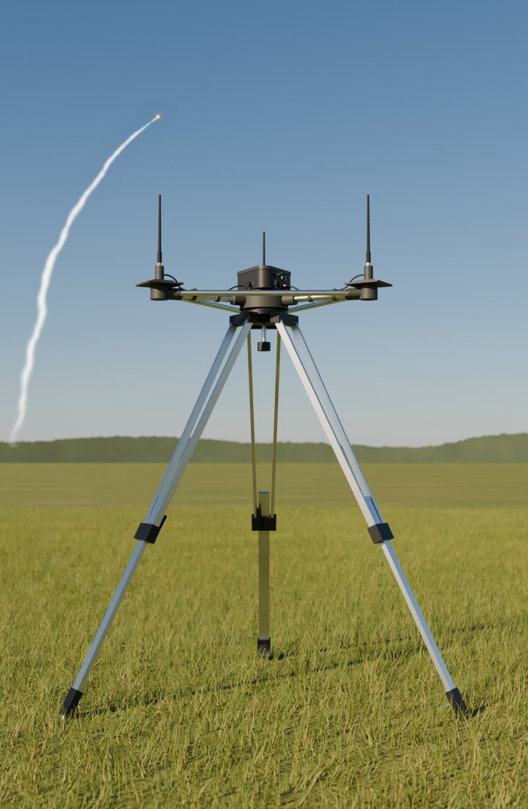
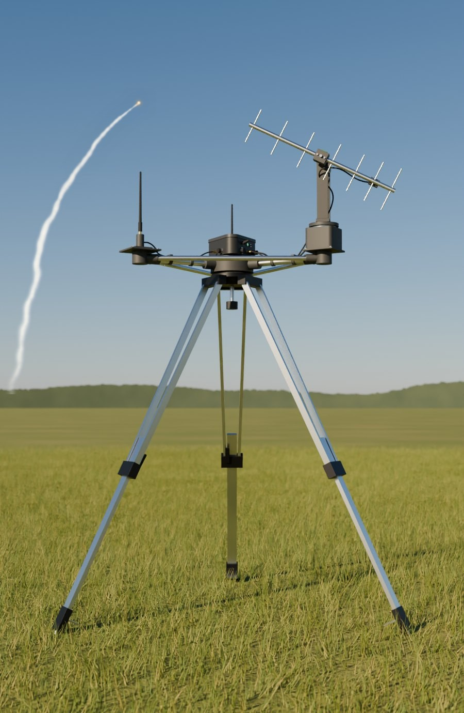
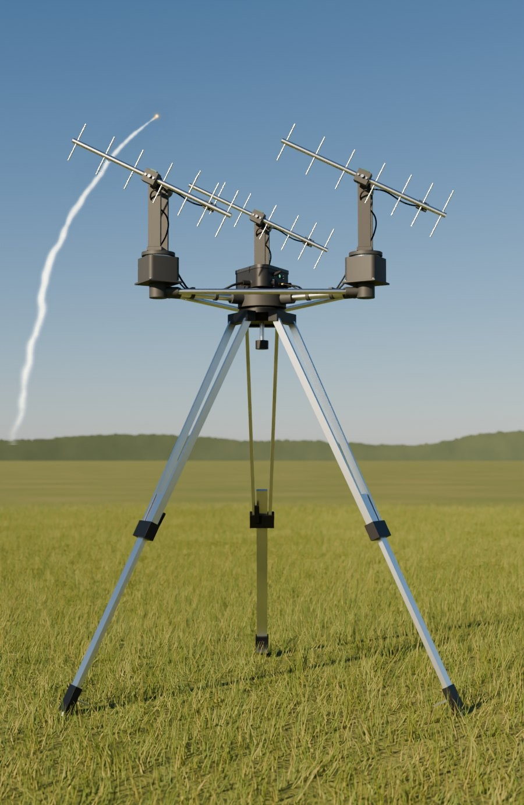
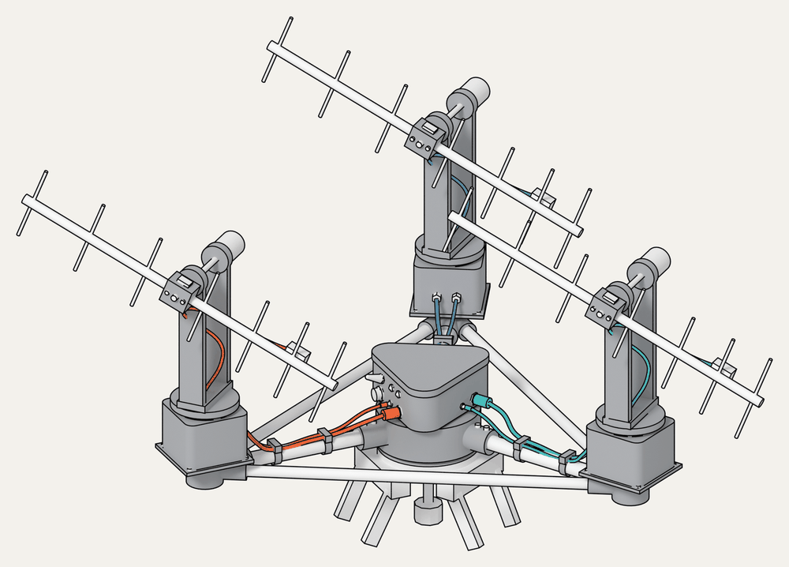
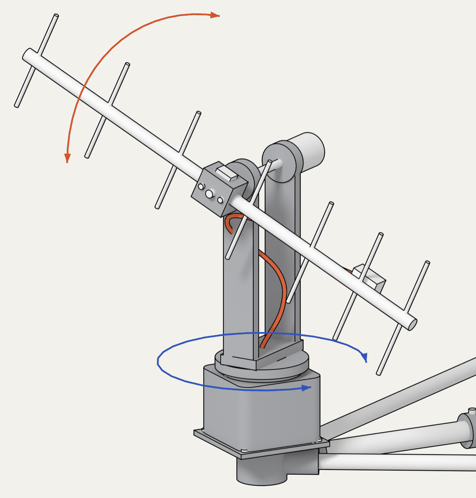

In progress
Ground Station
Manta and Remora, the gear on the ground that catches my rockets' signals and points an antenna at them.



My Dogtooth board rides in the rocket and sends its GPS position over a LoRa radio. This is what listens on the other end. It's still being designed, so everything here is a concept for now. These are drawings, not photos.

Manta
The receiver, AerospaceNU, project lead
The box in the middle holds my custom printed circuit board and three radios, so it can follow up to 3 rockets at once.
It sends everything to a laptop or phone over Bluetooth and saves it to an SD card. It sits on a surveyor tripod with three arms, and each arm takes either a simple antenna or a Remora.

Remora
The antenna tracker, up next
A small motor unit that bolts onto one of Manta's arms. It turns left and right and tilts up and down to keep a Yagi antenna pointed at the rocket.
It knows where to point by comparing the rocket's GPS position with its own.
Want to see the data side? The Flight Console is where Manta's data will show up.